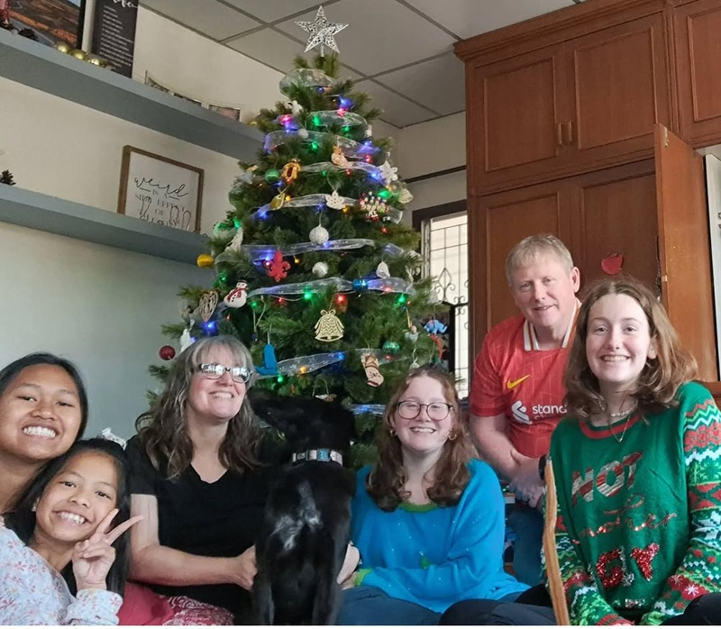

My family and I live in Bangkok, Thailand. Even though we are American citezens, Thailand is all my siblings and I know. I go to an international school called ICS (International Community School) where my Dad teaches P.E. I am currently on our student ministries team, specifically the Worship Team. I'm also lifeguard and CPR certified! :) I'm a middle child, with one older sister (in green) and a camera shy younger brother. My family has fostered 2 girls, Bin and Maaprang, who are some of the sweetest girls and I love them as my sisters. I also have a dog, named Jojo, who is an emotional support dog who needs emotional support. I am a very passionate Christian interested in learning as much as I can about the Bible and topics related to theology and apologetics.
